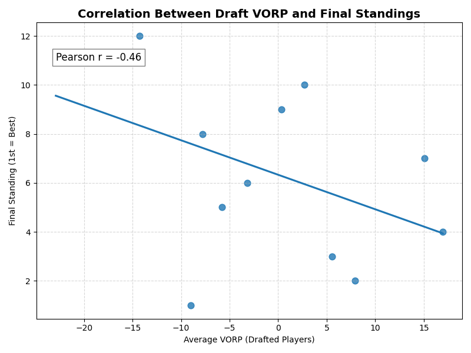
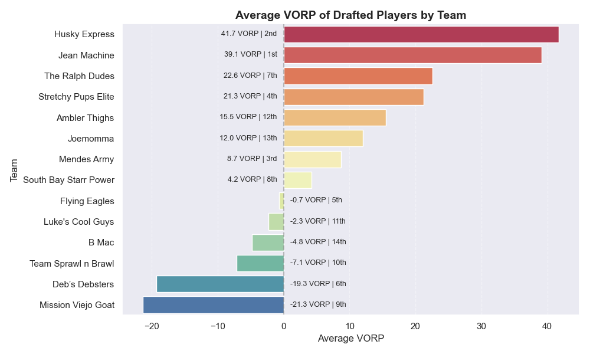
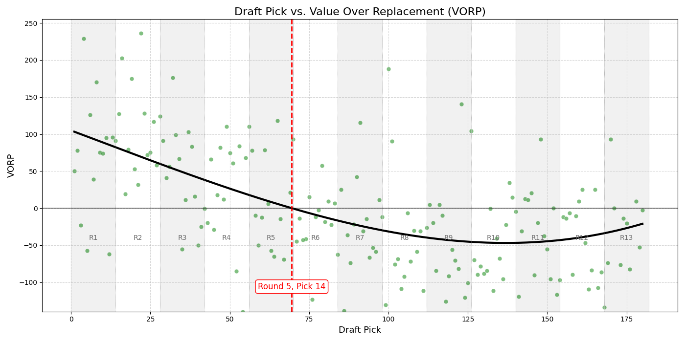
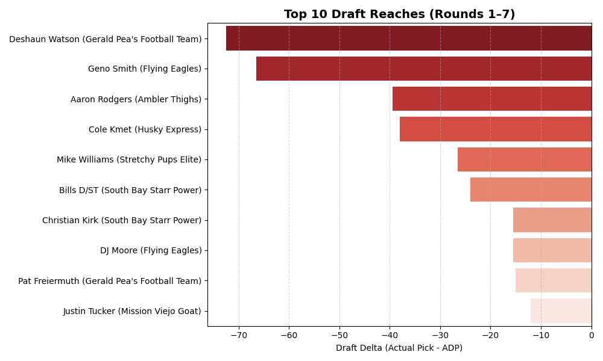
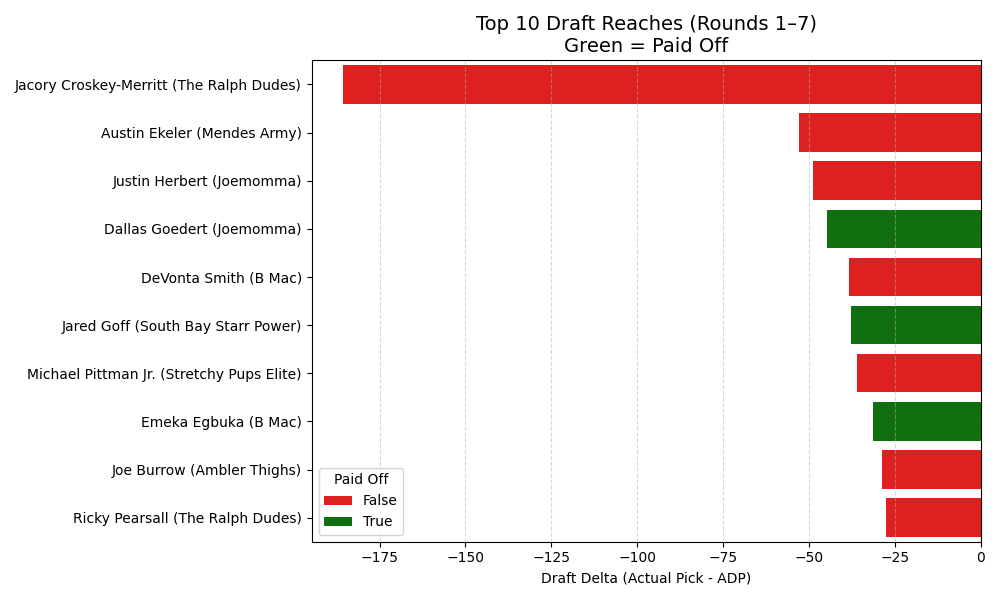
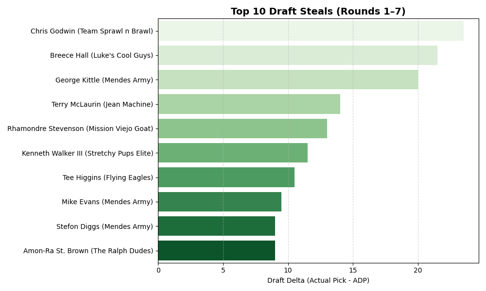
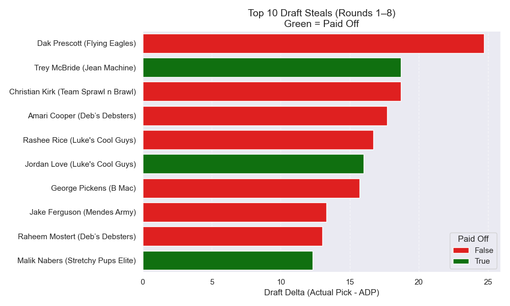
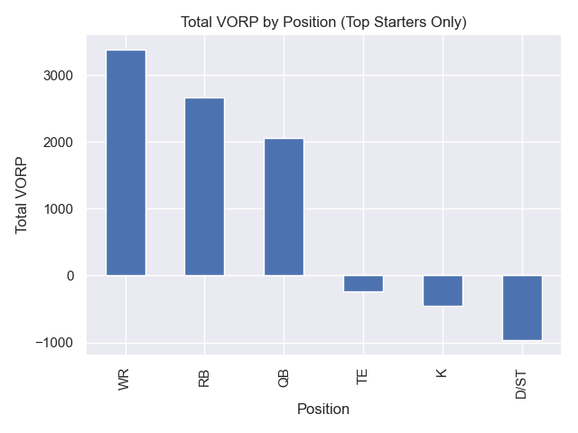

How Important is Drafting in Fantasy Football?
🏈 How Important is Drafting?
I wanted to find out how much the draft impacts fantasy football success — and which players delivered the most value in last season’s draft. Using data from ESPN’s Fantasy API and draft results from my league, I analyzed who truly lived up to their draft slot – and who didn’t.
📊 How I Got the Data
To conduct this analysis, I pulled: - The full draft order - Fantasy points scored - Positional ranks
From there, I calculated a custom Value Over Replacement Player (VORP) metric based on my league format:
- 14 teams
- 2 RB, 2 WR, 1 TE, 1 Flex (WR/RB/TE), 1 QB, 1 Kicker, 1 D/ST
VORP = Player Points − Avg. Starter at Position
📈 Correlation Between VORP and Final Standings
The first step was to measure whether average draft VORP correlates with league success. As shown in the chart below, there’s a strong negative correlation (r = –0.51), meaning that the higher your team’s average VORP, the better you tend to finish.

📊 Average VORP by Team
To further illustrate the relationship, I plotted the average VORP per team. Teams with higher average VORP clearly finished higher in the standings.

🎯 Draft Pick vs. VORP
I also examined how value changed by draft pick. The chart shows that early-round selections offer higher VORP, but some late-round picks still returned huge value.

🔎 Reaches (Original)
This chart highlights picks that were selected far earlier than their final production justified. Many of these were inefficient picks that underperformed expectations.

🔎 Reaches (Paid Off)
Some “reaches” paid off in a big way. This chart shows picks that were drafted earlier than consensus but exceeded expectations.

💰 Steals (Original)
These players were drafted late but delivered starter-level performance. Steals like this can win you your league.

💰 Steals (Paid Off)
These were picks that significantly outperformed their draft position. Some of the best values in the draft.

📌 VORP by Position
This visualization breaks down where the most draft value came by position. Certain positions, like WR and RB, tend to offer the most differential impact compared to replacement-level players.

🔥 Draft Value Heatmap
This is a heatmap containing all the players drafted within our leagues draft based on their VORP.
🧾 Conclusion
This analysis shows that the draft is absolutely critical to fantasy football success — especially in the first 7 rounds, where the majority of value is concentrated.
🔑 Key Takeaways:
- Drafting well matters: higher team VORP correlates with better final standings.
- Reaches can backfire, but some bold picks pay off.
- Steals in late rounds can be league-winners.
- Use VORP to normalize cross-position value and build smarter draft boards.
Whether you’re a casual player or a competitive fantasy manager, integrating this kind of analysis into your draft strategy gives you a serious edge.